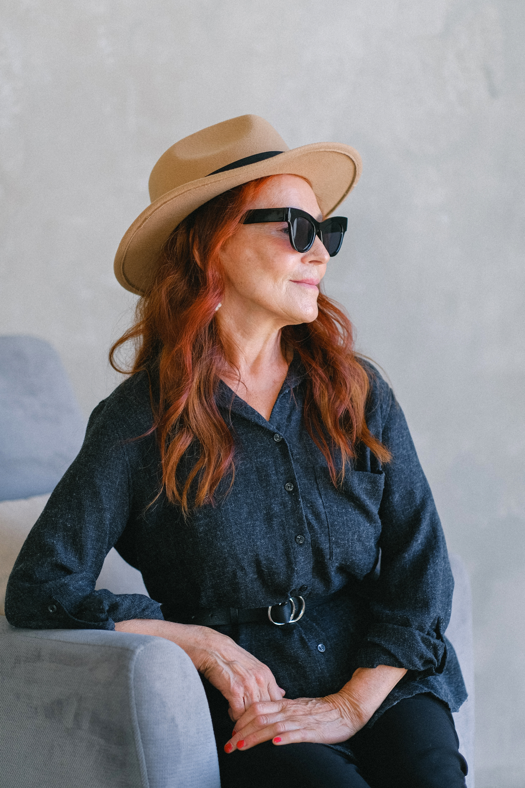

Заголовок h3
Один из самых важных навыков, которые может дать работа с психотерапевтом — умение в разных ситуациях по-разному обходиться со своими эмоциями. Смет этот процесс с автопилота и переведите его в поле сознания.
Давайте, к примеру, разберём тревогу. Можно разложить перед собой целую коллекцию доступных реакций и выбрать нужную.
Мы знаем, что нуждаемся в помощи и поддержке в трудные периоды жизни абсолютно нормально для любого человека, и стремимся сделать психотерапию безопасной, удобной и доступной каждому
Что ещё можно делать с тревогой?
- Управлять ей через что-то внешнее: включить музыку, которая создаёт другое настроение, сесть за работу с цифрами, которая быстро активизирует другие участки мозга, читать блоги, которые вас успокаивают и отвлекают.
- А ещё порой можно разрешить себе тревогу заесть чем-то вкусным. Это, конечно, не самая здоровая стратегия, но в ряде ситуаций можно считать её вполне рабочей. Особенно, когда внутренний ресурс на нуле, а поддерживающее окружение не в доступе.

Онтогенез речи отражает групповой эриксоновский гипноз.
Чем шире доступный вам репертуар реакций и чем более осознанно вы можете выбирать из него то, что лучше всего подойдёт в каждой конкретной ситуации, тем больше будет ваша устойчивость к стрессу, депрессиям, неопределённости, да и к жизни в целом.
Мы знаем, что нуждаемся в помощи и поддержке в трудные периоды жизни абсолютно нормально для любого человека, и стремимся сделать психотерапию безопасной, удобной и доступной каждому

Чем шире доступный вам репертуар реакций и чем более осознанно вы можете выбирать из него то, что лучше всего подойдёт в каждой конкретной ситуации, тем больше будет ваша устойчивость к стрессу, депрессиям, неопределённости, да и к жизни в целом.
А ещё порой можно разрешить себе тревогу заесть чем-то вкусным.
Упражнение #1
Нужно последовательно напрягать и расслаблять каждую мышцу в теле на несколько секунд. Напрягать стоит довольно сильно, чтобы потом отчётливее ощущать расслабляющий эффект. Начать можно с пальцев ног и постепенно подниматься вверх. Смысл в том, чтобы через напряжение дать стрессу выход, а затем вновь привести себя в спокойное состояние через расслабление.
Что ещё можно делать с тревогой?
- Управлять ей через что-то внешнее: включить музыку, которая создаёт другое настроение, сесть за работу с цифрами, которая быстро активизирует другие участки мозга, читать блоги, которые вас успокаивают и отвлекают.
- А ещё порой можно разрешить себе тревогу здесь нет ничего экстремального. Это, конечно, не самая здоровая стратегия, но в ряде ситуаций можно считать её вполне рабочей. Особенно, когда внутренний ресурс на нуле, а поддерживающее окружение не в доступе.

Чем шире доступный вам репертуар реакций и чем более осознанно вы можете выбирать из него то, что лучше всего подойдёт в каждой конкретной ситуации, тем больше будет ваша устойчивость к стрессу.

Чем шире доступный вам репертуар реакций и чем более осознанно вы можете выбирать из него то, что лучше всего подойдёт в каждой конкретной ситуации, тем больше будет ваша устойчивость к стрессу, депрессиям, неопределённости, да и к жизни в целом.

Чем шире доступный вам репертуар реакций и чем более осознанно вы можете выбирать из него то, что лучше всего подойдёт в каждой конкретной ситуации, тем больше будет ваша устойчивость к стрессу, депрессиям, неопределённости, да и к жизни в целом.
Одна из ключевых задач психотерапии как раз и заключается в том, чтобы этот репертуар расширить и обучить человека пользоваться доступными ему реакциями в той последовательности, пропорциях и объёмах, которые подходят именно ему. Без оглядки на то, как «по правилам» или «как у других».
Упражнение #1
Нужно последовательно напрягать и расслаблять каждую мышцу в теле на несколько секунд. Напрягать стоит довольно сильно, чтобы потом отчётливее ощущать расслабляющий эффект. Начать можно с пальцев ног и постепенно подниматься вверх. Смысл в том, чтобы через напряжение дать стрессу выход, а затем вновь привести себя в спокойное состояние через расслабление.